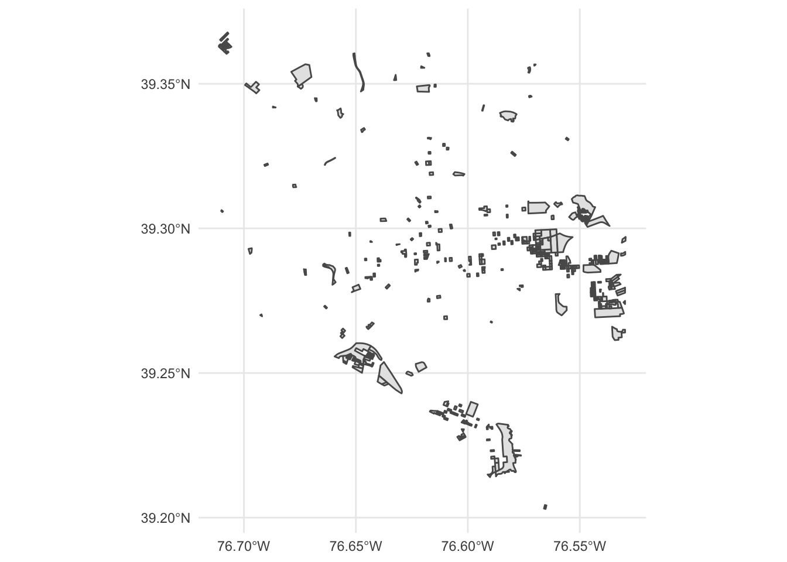
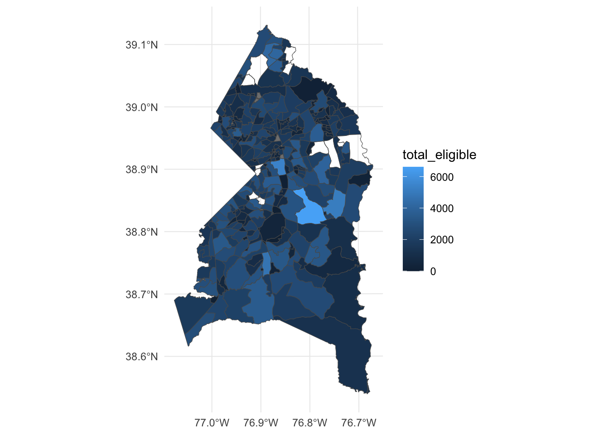
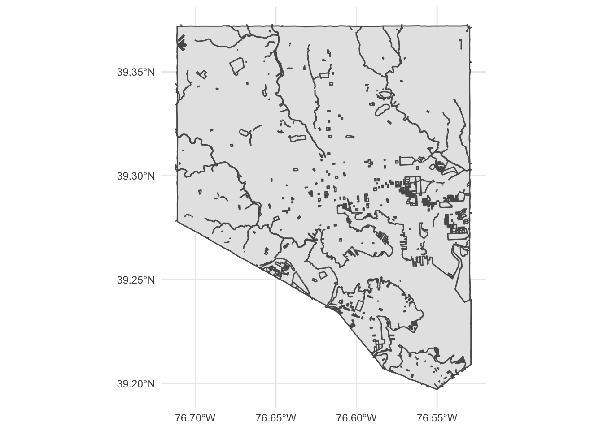
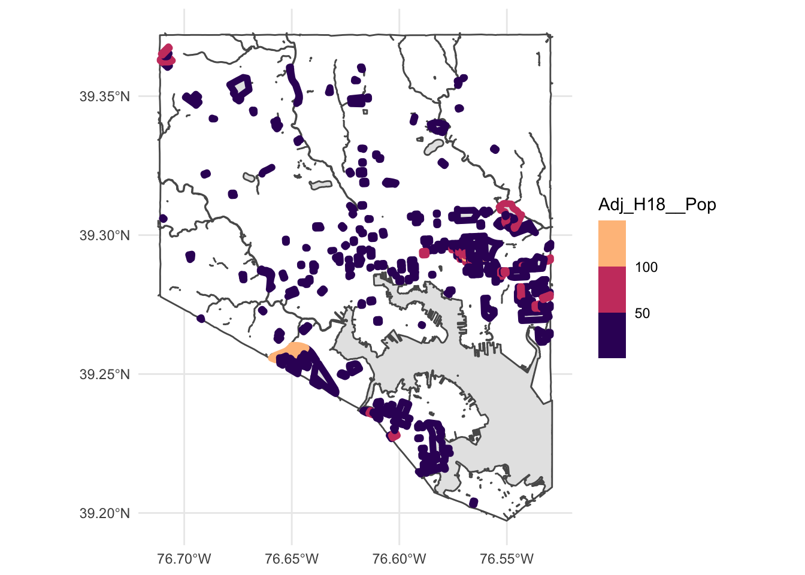

28 Geographic data basics
Up to now, we’ve been looking at patterns in data for what is more than this, or what’s the middle look like. We’ve calculated metrics like percentages, or looked at how data changes over time.
Another way we can look at the data is geographically. Is there a spatial pattern to our data? Can we learn anything by using distance as a metric? What if we merge non-geographic data into geographic data?
The bad news is that there isn’t a One Library To Rule Them All when it comes to geo queries in R. But there’s one emerging, called Simple Features, that is very good.
Go to the console and install it with install.packages("sf")
To understand geographic queries, you have to get a few things in your head first:
- Your query is using planar space. Usually that’s some kind of projection of the world. If you’re lucky, your data is projected, and the software will handle projection differences under the hood without you knowing anything about it.
- Projections are cartographers making opinionated decisions about what the world should look like when you take a spheroid – the earth isn’t perfectly round – and flatten it. Believe it or not, every state in the US has their own geographic projection. There’s dozens upon dozens of them.
- Geographic queries work in layers. In most geographic applications, you’ll have multiple layers. You’ll have a boundary file, and a river file, and a road file, and a flood file and combined together they make the map. But you have to think in layers.
- See 1. With layers, they’re all joined together by the planar space. So you don’t need to join one to the other like we did earlier – the space has done that. So you can query how many X are within the boundaries on layer Y. And it’s the plane that holds them together.
28.1 Importing and viewing data
Let’s start with the absolute basics of geographic data: loading and viewing. Load libraries as usual.
library(tidyverse)
library(sf)
library(janitor)First: an aside on geographic data. There are many formats for geographic data, but data type you’ll see the most is called the shapefile. It comes from a company named ESRI, which created the most widely-used GIS software in the world. For years, they were the only game in town, really, and the shapefile became ubiquitous, especially so in government and utilities.
So more often than not, you’ll be dealing with a shapefile. But a shapefile isn’t just a single file – it’s a collection of files that combined make up all the data that allow you to use it. There’s a .shp file – that’s the main file that pulls it all together – but it’s important to note if your shapefiles has a .prj file, which indicates that the projection is specified. There’s also a newer format from ESRI called a geodatabase (.gdb) that contains all of the elements that shapefiles do. We can use the sf library to read either format.
The data we’re going to be working with is a file from the Maryland Citizens Redistricting Commission showing data about political districts in the state and their demographic characteristics.
Similar to readr, the sf library has functions to read geographic data. In this case, we’re going to use st_read to read in our hospitals data. And then glimpse it to look at the columns.
blocks <- st_read("data/Adjusted2020.gdb")Reading layer `Census_Blocks' from data source
`/Users/dpwillis/code/datajournalismbook-elections/data/Adjusted2020.gdb'
using driver `OpenFileGDB'
Simple feature collection with 83827 features and 26 fields
Geometry type: MULTIPOLYGON
Dimension: XY
Bounding box: xmin: -79.48765 ymin: 37.88661 xmax: -74.98628 ymax: 39.72304
Geodetic CRS: NAD83glimpse(blocks)Rows: 83,827
Columns: 27
$ Block <chr> "240479514002073", "240479514001005", "24047951400…
$ BlockGroup <chr> "240479514002", "240479514001", "240479514001", "2…
$ Tract <chr> "24047951400", "24047951400", "24047951400", "2404…
$ County <chr> "24047", "24047", "24047", "24047", "24047", "2404…
$ State <chr> "24", "24", "24", "24", "24", "24", "24", "24", "2…
$ VTD <chr> "2404704-001", "2404702-001", "2404702-001", "2404…
$ Adj_Population <int> 0, 4, 0, 31, 18, 2, 28, 3, 18, 5, 45, 0, 5, 0, 0, …
$ Adj_Hispanic_Origin <int> 0, 0, 0, 2, 1, 0, 2, 0, 0, 0, 1, 0, 0, 0, 0, 0, 0,…
$ Adj_NH_Wht <int> 0, 4, 0, 29, 13, 0, 16, 1, 8, 3, 16, 0, 1, 0, 0, 0…
$ Adj_NH_Blk <int> 0, 0, 0, 0, 3, 0, 7, 0, 1, 0, 28, 0, 3, 0, 0, 0, 0…
$ Adj_NH_Ind <int> 0, 0, 0, 0, 0, 1, 0, 0, 0, 0, 0, 0, 0, 0, 0, 0, 0,…
$ Adj_NH_Asn <int> 0, 0, 0, 0, 0, 0, 3, 0, 3, 0, 0, 0, 0, 0, 0, 0, 0,…
$ Adj_NH_Hwn <int> 0, 0, 0, 0, 0, 0, 0, 0, 0, 0, 0, 0, 0, 0, 0, 0, 0,…
$ Adj_NH_Oth <int> 0, 0, 0, 0, 0, 0, 0, 0, 0, 1, 0, 0, 0, 0, 0, 0, 0,…
$ Adj_NH_2__Races <int> 0, 0, 0, 0, 1, 1, 0, 2, 6, 1, 0, 0, 1, 0, 0, 0, 1,…
$ Adj_18__Pop <int> 0, 4, 0, 30, 15, 2, 21, 1, 12, 4, 32, 0, 4, 0, 0, …
$ Adj_H18__Pop <int> 0, 0, 0, 2, 0, 0, 0, 0, 0, 0, 0, 0, 0, 0, 0, 0, 0,…
$ Adj_NH18__Wht <int> 0, 4, 0, 28, 11, 0, 13, 1, 8, 3, 7, 0, 1, 0, 0, 0,…
$ Adj_NH18__Blk <int> 0, 0, 0, 0, 3, 0, 7, 0, 0, 0, 25, 0, 3, 0, 0, 0, 0…
$ Adj_NH18__Ind <int> 0, 0, 0, 0, 0, 1, 0, 0, 0, 0, 0, 0, 0, 0, 0, 0, 0,…
$ Adj_NH18__Asn <int> 0, 0, 0, 0, 0, 0, 1, 0, 3, 0, 0, 0, 0, 0, 0, 0, 0,…
$ Adj_NH18__Hwn <int> 0, 0, 0, 0, 0, 0, 0, 0, 0, 0, 0, 0, 0, 0, 0, 0, 0,…
$ Adj_NH18__Oth <int> 0, 0, 0, 0, 0, 0, 0, 0, 0, 1, 0, 0, 0, 0, 0, 0, 0,…
$ Adj_NH18__2__Races <int> 0, 0, 0, 0, 1, 1, 0, 0, 1, 0, 0, 0, 0, 0, 0, 0, 0,…
$ Shape_Length <dbl> 0.256035239, 0.069209540, 0.156886172, 0.278946567…
$ Shape_Area <dbl> 7.494290e-05, 1.873535e-04, 3.687426e-05, 1.309177…
$ Shape <MULTIPOLYGON [°]> MULTIPOLYGON (((-75.42637 3..., MULTI…This looks like a normal dataframe, and mostly it is. We have one row per Census block - the smallest geographic census unit - and each column is some feature of that block: the census tract, county and state it is located in and more. What sets this data apart from other dataframes we’ve used is the last column, “geometry”, which is of a new data type. It’s not a character or a number, it’s a “MULTIPOLYGON”, which is composed of a shape that, when we plot it on a map, will be highlighted. If you’ve ever filled in a “connect the dots” picture by drawing lines between points, in order to reveal a hidden shape, then you’re familiar with the concept.
You can see the full description of the data.
Let’s look at just Baltimore City census blocks. Good news – sf plays very nicely with the tidyverse, so we can filter data the way we are accustomed. The County column represents what is called a FIPS code, which is a unique code for a geographic unit like state or county. All Maryland FIPS codes begin with “24”, which is the code for the state as a whole.
baltimore_city_blocks <- blocks %>%
filter(County == "24510")
baltimore_city_blocksSimple feature collection with 10025 features and 26 fields
Geometry type: MULTIPOLYGON
Dimension: XY
Bounding box: xmin: -76.71152 ymin: 39.19721 xmax: -76.52945 ymax: 39.37221
Geodetic CRS: NAD83
First 10 features:
Block BlockGroup Tract County State VTD
1 245102705011005 245102705011 24510270501 24510 24 2451027-011
2 245102705011004 245102705011 24510270501 24510 24 2451027-011
3 245102705013006 245102705013 24510270501 24510 24 2451027-010
4 245102705013007 245102705013 24510270501 24510 24 2451027-010
5 245102705011012 245102705011 24510270501 24510 24 2451027-010
6 245102705021015 245102705021 24510270502 24510 24 2451027-008
7 245102705021013 245102705021 24510270502 24510 24 2451027-008
8 245102705021014 245102705021 24510270502 24510 24 2451027-008
9 245102705021011 245102705021 24510270502 24510 24 2451027-008
10 245102705021010 245102705021 24510270502 24510 24 2451027-008
Adj_Population Adj_Hispanic_Origin Adj_NH_Wht Adj_NH_Blk Adj_NH_Ind
1 21 3 8 6 0
2 47 4 22 17 0
3 45 1 5 32 0
4 67 2 18 43 0
5 25 0 13 5 0
6 37 2 17 18 0
7 54 4 29 20 0
8 41 2 6 29 0
9 12 0 1 5 0
10 19 5 9 5 0
Adj_NH_Asn Adj_NH_Hwn Adj_NH_Oth Adj_NH_2__Races Adj_18__Pop Adj_H18__Pop
1 0 0 1 3 20 3
2 3 0 0 1 40 3
3 2 0 0 5 39 1
4 1 0 0 3 55 2
5 4 0 1 2 25 0
6 0 0 0 0 23 2
7 0 0 0 1 47 3
8 0 0 4 0 29 0
9 1 0 0 5 7 0
10 0 0 0 0 19 5
Adj_NH18__Wht Adj_NH18__Blk Adj_NH18__Ind Adj_NH18__Asn Adj_NH18__Hwn
1 8 5 0 0 0
2 19 14 0 3 0
3 5 26 0 2 0
4 17 32 0 1 0
5 13 5 0 4 0
6 12 9 0 0 0
7 24 20 0 0 0
8 6 19 0 0 0
9 1 1 0 0 0
10 9 5 0 0 0
Adj_NH18__Oth Adj_NH18__2__Races Shape_Length Shape_Area
1 1 3 0.004460665 8.112280e-07
2 0 1 0.005213052 1.167317e-06
3 0 5 0.005749833 1.816332e-06
4 0 3 0.009587319 3.818661e-06
5 1 2 0.004994883 1.492671e-06
6 0 0 0.004975204 1.464421e-06
7 0 0 0.012717356 6.443919e-06
8 4 0 0.004851208 1.433677e-06
9 0 5 0.004014872 7.556780e-07
10 0 0 0.003981790 7.430995e-07
Shape
1 MULTIPOLYGON (((-76.5405 39...
2 MULTIPOLYGON (((-76.53746 3...
3 MULTIPOLYGON (((-76.53486 3...
4 MULTIPOLYGON (((-76.53509 3...
5 MULTIPOLYGON (((-76.53303 3...
6 MULTIPOLYGON (((-76.53278 3...
7 MULTIPOLYGON (((-76.5299 39...
8 MULTIPOLYGON (((-76.53184 3...
9 MULTIPOLYGON (((-76.53112 3...
10 MULTIPOLYGON (((-76.53258 3...We have 10,025 blocks, according to this data. Now we can try to get a sense of the population in them. In how many blocks does the number of Hispanic population 18 and over exceed both non-Hispanic white 18 and over population and non-Hispanic Black 18 and over population?
baltimore_city_blocks %>%
filter(Adj_H18__Pop > Adj_NH18__Wht & Adj_H18__Pop > Adj_NH18__Blk)Simple feature collection with 386 features and 26 fields
Geometry type: MULTIPOLYGON
Dimension: XY
Bounding box: xmin: -76.71119 ymin: 39.20299 xmax: -76.52952 ymax: 39.36776
Geodetic CRS: NAD83
First 10 features:
Block BlockGroup Tract County State VTD
1 245102605013003 245102605013 24510260501 24510 24 2451026-004
2 245102605013000 245102605013 24510260501 24510 24 2451026-004
3 245102605011005 245102605011 24510260501 24510 24 2451026-005
4 245102605011019 245102605011 24510260501 24510 24 2451026-005
5 245102605011011 245102605011 24510260501 24510 24 2451026-004
6 245102605011012 245102605011 24510260501 24510 24 2451026-004
7 245102605011002 245102605011 24510260501 24510 24 2451026-004
8 245102605011008 245102605011 24510260501 24510 24 2451026-004
9 245102605011009 245102605011 24510260501 24510 24 2451026-004
10 245102604041015 245102604041 24510260404 24510 24 2451026-011
Adj_Population Adj_Hispanic_Origin Adj_NH_Wht Adj_NH_Blk Adj_NH_Ind
1 180 85 51 39 0
2 26 17 5 0 0
3 71 56 8 4 0
4 109 54 35 9 2
5 94 47 34 8 0
6 90 57 25 2 0
7 74 56 6 11 0
8 103 62 27 8 0
9 59 33 18 7 0
10 10 6 0 4 0
Adj_NH_Asn Adj_NH_Hwn Adj_NH_Oth Adj_NH_2__Races Adj_18__Pop Adj_H18__Pop
1 2 0 0 3 131 53
2 0 0 0 4 14 10
3 0 0 0 3 50 36
4 6 0 0 3 83 37
5 2 0 0 3 64 28
6 6 0 0 0 55 26
7 1 0 0 0 50 34
8 0 0 0 6 78 48
9 0 0 0 1 49 24
10 0 0 0 0 7 6
Adj_NH18__Wht Adj_NH18__Blk Adj_NH18__Ind Adj_NH18__Asn Adj_NH18__Hwn
1 47 28 0 2 0
2 4 0 0 0 0
3 8 4 0 0 0
4 32 5 1 6 0
5 24 8 0 2 0
6 25 2 0 2 0
7 6 9 0 1 0
8 24 0 0 0 0
9 17 7 0 0 0
10 0 1 0 0 0
Adj_NH18__Oth Adj_NH18__2__Races Shape_Length Shape_Area
1 0 1 0.005735603 1.580966e-06
2 0 0 0.006037951 1.841948e-06
3 0 2 0.003040933 5.478480e-07
4 0 2 0.003975398 7.063020e-07
5 0 2 0.004041064 7.579205e-07
6 0 0 0.003965293 7.160955e-07
7 0 0 0.003695767 6.496640e-07
8 0 6 0.003821795 6.676600e-07
9 0 1 0.003384148 5.786680e-07
10 0 0 0.024130223 1.573279e-05
Shape
1 MULTIPOLYGON (((-76.52971 3...
2 MULTIPOLYGON (((-76.52958 3...
3 MULTIPOLYGON (((-76.54528 3...
4 MULTIPOLYGON (((-76.54295 3...
5 MULTIPOLYGON (((-76.54244 3...
6 MULTIPOLYGON (((-76.541 39....
7 MULTIPOLYGON (((-76.54008 3...
8 MULTIPOLYGON (((-76.54054 3...
9 MULTIPOLYGON (((-76.53773 3...
10 MULTIPOLYGON (((-76.53792 3...So there are 386 Census blocks with adult Hispanic population greater than either white or Black adult population. Where are they? We can simply plot them on a longitude-latitude grid using ggplot.
baltimore_hispanic_blocks <- baltimore_city_blocks %>%
filter(Adj_H18__Pop > Adj_NH18__Wht & Adj_H18__Pop > Adj_NH18__Blk)baltimore_hispanic_blocks %>%
ggplot() +
geom_sf() +
theme_minimal()
Each shape is a Census block.
If you know anything about the shape of Baltimore, you can kinda identify it here. The untouched area in the lower right is probably the harbor, right? But this map is not exactly ideal. It would help to have a state and county map layered underneath of it, to help make sense of the spatial nature of this data.
This is where layering becomes more clear. First, we want to go out and get another shapefile, this one showing Maryland jurisdiction outlines.
Instead of loading it from our local machine, like we did above, we’re going to use a package to directly download it from the U.S. Census. The package is called tigris and it’s developed by the same person who made tidycensus.
In the console, install tigris with the install packages function
Then load it:
library(tigris)To enable caching of data, set `options(tigris_use_cache = TRUE)`
in your R script or .Rprofile.Now, let’s use the counties() function from tigris to pull down a shapefile of all U.S. counties.
counties <- counties()Retrieving data for the year 2020
|
| | 0%
|
|= | 1%
|
|= | 2%
|
|== | 2%
|
|== | 3%
|
|== | 4%
|
|=== | 4%
|
|=== | 5%
|
|==== | 5%
|
|==== | 6%
|
|===== | 7%
|
|===== | 8%
|
|====== | 8%
|
|====== | 9%
|
|======= | 9%
|
|======= | 10%
|
|======= | 11%
|
|======== | 11%
|
|======== | 12%
|
|========= | 12%
|
|========= | 13%
|
|========== | 14%
|
|=========== | 16%
|
|============= | 18%
|
|============== | 20%
|
|============== | 21%
|
|=============== | 21%
|
|=============== | 22%
|
|================ | 22%
|
|================ | 23%
|
|================ | 24%
|
|================= | 24%
|
|================= | 25%
|
|================== | 25%
|
|================== | 26%
|
|=================== | 26%
|
|=================== | 27%
|
|=================== | 28%
|
|==================== | 28%
|
|==================== | 29%
|
|===================== | 29%
|
|===================== | 30%
|
|===================== | 31%
|
|====================== | 31%
|
|====================== | 32%
|
|======================= | 32%
|
|======================= | 33%
|
|======================= | 34%
|
|======================== | 34%
|
|======================== | 35%
|
|========================= | 35%
|
|========================= | 36%
|
|========================== | 37%
|
|========================== | 38%
|
|=========================== | 38%
|
|=========================== | 39%
|
|============================ | 40%
|
|============================ | 41%
|
|============================= | 41%
|
|============================= | 42%
|
|============================== | 42%
|
|============================== | 43%
|
|============================== | 44%
|
|=============================== | 44%
|
|================================ | 45%
|
|================================ | 46%
|
|================================= | 46%
|
|================================= | 47%
|
|================================= | 48%
|
|================================== | 48%
|
|================================== | 49%
|
|=================================== | 49%
|
|=================================== | 50%
|
|=================================== | 51%
|
|==================================== | 51%
|
|==================================== | 52%
|
|===================================== | 53%
|
|===================================== | 54%
|
|====================================== | 54%
|
|====================================== | 55%
|
|======================================= | 55%
|
|======================================= | 56%
|
|======================================== | 56%
|
|======================================== | 57%
|
|======================================== | 58%
|
|========================================= | 58%
|
|========================================= | 59%
|
|========================================== | 61%
|
|=========================================== | 61%
|
|=========================================== | 62%
|
|============================================ | 62%
|
|============================================ | 63%
|
|============================================= | 64%
|
|============================================= | 65%
|
|============================================== | 65%
|
|============================================== | 66%
|
|=============================================== | 67%
|
|=============================================== | 68%
|
|================================================ | 68%
|
|================================================ | 69%
|
|================================================= | 69%
|
|================================================= | 70%
|
|================================================== | 71%
|
|================================================== | 72%
|
|=================================================== | 72%
|
|=================================================== | 73%
|
|=================================================== | 74%
|
|==================================================== | 74%
|
|==================================================== | 75%
|
|===================================================== | 75%
|
|===================================================== | 76%
|
|====================================================== | 77%
|
|====================================================== | 78%
|
|======================================================= | 78%
|
|======================================================= | 79%
|
|======================================================== | 79%
|
|======================================================== | 80%
|
|======================================================== | 81%
|
|========================================================= | 81%
|
|========================================================= | 82%
|
|========================================================== | 82%
|
|========================================================== | 83%
|
|========================================================== | 84%
|
|=========================================================== | 84%
|
|=========================================================== | 85%
|
|============================================================ | 85%
|
|============================================================ | 86%
|
|============================================================= | 86%
|
|============================================================= | 87%
|
|============================================================= | 88%
|
|============================================================== | 88%
|
|============================================================== | 89%
|
|=============================================================== | 89%
|
|=============================================================== | 90%
|
|=============================================================== | 91%
|
|================================================================ | 91%
|
|================================================================ | 92%
|
|================================================================= | 92%
|
|================================================================= | 93%
|
|================================================================== | 94%
|
|================================================================== | 95%
|
|=================================================================== | 95%
|
|=================================================================== | 96%
|
|==================================================================== | 96%
|
|==================================================================== | 97%
|
|==================================================================== | 98%
|
|===================================================================== | 98%
|
|===================================================================== | 99%
|
|======================================================================| 99%
|
|======================================================================| 100%glimpse(counties)Rows: 3,234
Columns: 18
$ STATEFP <chr> "31", "53", "35", "31", "31", "72", "46", "48", "06", "21", "…
$ COUNTYFP <chr> "039", "069", "011", "109", "129", "085", "099", "327", "091"…
$ COUNTYNS <chr> "00835841", "01513275", "00933054", "00835876", "00835886", "…
$ GEOID <chr> "31039", "53069", "35011", "31109", "31129", "72085", "46099"…
$ NAME <chr> "Cuming", "Wahkiakum", "De Baca", "Lancaster", "Nuckolls", "L…
$ NAMELSAD <chr> "Cuming County", "Wahkiakum County", "De Baca County", "Lanca…
$ LSAD <chr> "06", "06", "06", "06", "06", "13", "06", "06", "06", "06", "…
$ CLASSFP <chr> "H1", "H1", "H1", "H1", "H1", "H1", "H1", "H1", "H1", "H1", "…
$ MTFCC <chr> "G4020", "G4020", "G4020", "G4020", "G4020", "G4020", "G4020"…
$ CSAFP <chr> NA, NA, NA, "339", NA, "490", NA, NA, NA, NA, "534", "352", N…
$ CBSAFP <chr> NA, NA, NA, "30700", NA, "41980", "43620", NA, NA, NA, "22300…
$ METDIVFP <chr> NA, NA, NA, NA, NA, NA, NA, NA, NA, NA, NA, NA, NA, NA, NA, N…
$ FUNCSTAT <chr> "A", "A", "A", "A", "A", "A", "A", "A", "A", "A", "A", "A", "…
$ ALAND <dbl> 1477645345, 680976231, 6016818946, 2169272970, 1489645188, 87…
$ AWATER <dbl> 10690204, 61568965, 29090018, 22847034, 1718484, 32509, 18188…
$ INTPTLAT <chr> "+41.9158651", "+46.2946377", "+34.3592729", "+40.7835474", "…
$ INTPTLON <chr> "-096.7885168", "-123.4244583", "-104.3686961", "-096.6886584…
$ geometry <MULTIPOLYGON [°]> MULTIPOLYGON (((-97.01952 4..., MULTIPOLYGON (((…This looks pretty similar to our Census blocks shapefile, in that it looked mostly like a normal dataframe with the exception of the new geometry column.
This county shapefile has all 3233 U.S. counties. We only want the Maryland counties, so we’re going to filter the data to only keep Maryland counties. There is no STATE column, but there is a STATEFP column, with each number representing a state. Maryland’s FP number is 24.
md_counties <- counties %>%
filter(STATEFP == "24")To see what this looks like, let’s plot it out with ggplot. We can pretty clearly see the shapes of Maryland counties.
md_counties %>%
ggplot() +
geom_sf() +
theme_minimal()
Hey, look, it’s Maryland! Of course, we just need Baltimore City, so let’s get that:
baltimore_city <- md_counties %>%
filter(COUNTYFP == "510")With this map, we can layer our Census block data.
Something to note: The layers are rendered in the order they appear. So the first geom_sf is rendered first. The second geom_sf is rendered ON TOP OF the first one.
We’re also going to change things up a bit to put the datasets we want to display INSIDE of the geom_sf() function, instead of starting with a dataframe. We have two to plot now, so it’s easier this way.
ggplot() +
geom_sf(data=baltimore_city) +
geom_sf(data=baltimore_hispanic_blocks) +
theme_minimal()
What can we tell from this?
Well, Census blocks where adult Hispanic population outnumbers both white and Black adult population are clustered in the city’s eastern and southwestern areas. There are fewer such blocks in the northern parts of the city. We’re also missing the water - the harbor, rivers and streams. But we can add those, too! The city offers various GIS data, including the locations of waterways.
water <- st_read("data/Water.shp")Reading layer `Water' from data source
`/Users/dpwillis/code/datajournalismbook-elections/data/Water.shp'
using driver `ESRI Shapefile'
Simple feature collection with 468 features and 5 fields
Geometry type: POLYGON
Dimension: XY
Bounding box: xmin: 1393746 ymin: 557989.5 xmax: 1445801 ymax: 621654.7
Projected CRS: NAD83 / Maryland (ftUS)Now let’s add that to our previous map. The order here matters - we want the outline of the city first, followed by water and then the Hispanic population blocks:
ggplot() +
geom_sf(data=baltimore_city) +
geom_sf(data=water) +
geom_sf(data=baltimore_hispanic_blocks) +
theme_minimal()
Better, but this is a pretty blunt visualization. Not all Census blocks are equally sized. Some have more people than the others, for example. It’s hard to differentiate that here.
We can get a sense of where the largest Hispanic populations are, by changing the color of the shapes according to the number of people. We do this by setting the aesthetic – or aes – to use the Adj_H18__POP column inside of the geom_sf function. To make the differences easier to see, we’re going to change the fill of the city white, too, and use a special color palette, viridis magma. We’re also going to make the shapes slightly bigger.
ggplot() +
geom_sf(data=baltimore_city, fill="white") +
geom_sf(data=water) +
geom_sf(data=baltimore_hispanic_blocks, aes(color=Adj_H18__Pop), size=2) +
scale_colour_viridis_b(option="magma") +
theme_minimal()
With these changes, what else can we make out here? Well, definitely the eastern and southwestern blocks have larger Hispanic populations, and then there’s the northwest corner that stands out, too. You should have questions.